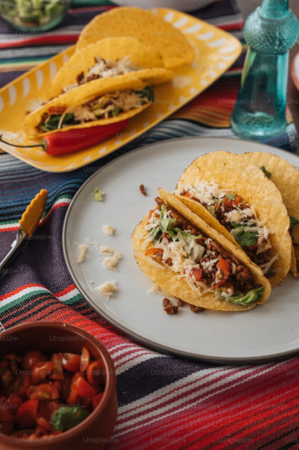

Ground Beef Tacos

Ingredients
- Corn Tortillas
- 1lb Ground Beef
- Taco Seasoning
- Canola Oil
- Shredded Cheese
- 1/2 Lettuce
- 2 Tomato
- 1/2 Onion
- 1 Cilantro
Instructions
- Cook the ground beef on skillet until brown.
- When brown, add the taco seasoning and a little water. Mix it and simmer on low for another 5 minutes.
- Chop the tomato, onion, and cilantro, and mix in a bowl. Put to the side.
- Chop the lettuce and put to the side.
- Start heating up another skillet with canola oil on medium heat.
- Put corn tortilla on the skillet and put some ground beef on the tortilla. Fold it.
- Cook on each side for about 1 minute, by flipping it over, until nice and crunchy.
- Build your tacos and enjoy!